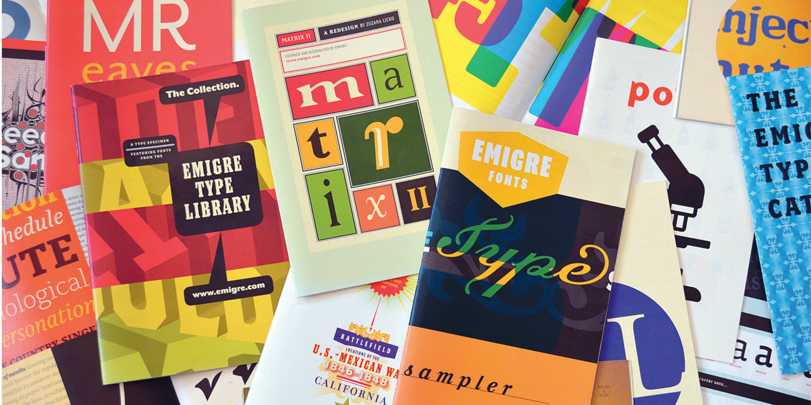

About emigre. Emigre. (n.d.). https://www.emigre.com/About
Coles, S. (2025, December 29). Behind the scenes with Licko & VanderLans. Letterform Archive. https://letterformarchive.org/news/emigre-fonts-interview/
Emigre. Emigre | Adobe Fonts. (n.d.). https://fonts.adobe.com/foundries/emigre
Wikimedia Foundation. (2025, November 15). Emigre fonts. Wikipedia. https://en.wikipedia.org/wiki/Emigre_Fonts